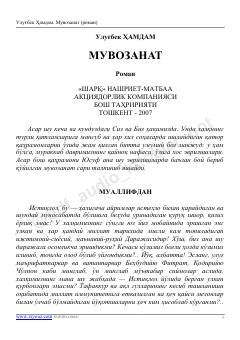

MMustaqillik davri murakkabliklari va insonning o'z ichki dunyosidagi kurashlari haqidagi roman.
Roman mustaqillik davri murakkabliklari va insonning o'z ichki dunyosidagi kurashlari haqida hikoya qiladi. Asar bosh qahramoni Yusuf hayotiy sinovlar va yo'qotishlarga qaramay, o'z e'tiqodi va oliy qadriyat bo'lgan muvozanatni saqlab qolishga intiladi.